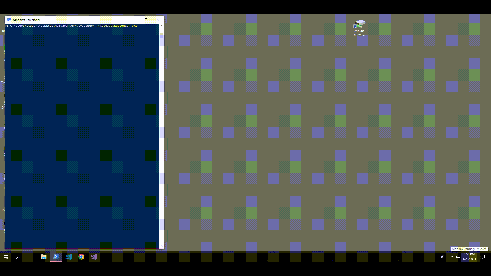

Keylogger malware
Updated: January 29, 2024
Introduction
Greetings and welcome to my blog! In this inaugural post, I am excited to kick off a series focused on the understanding of how certain malware techniques works. Throughout this series, I will delve into various applications I have created to explore the techniques and functionalities employed by malware. I firmly believe that the most effective way to comprehend and master a subject is through hands-on, manual involvement. Therefore, in these personal projects, I will share insights gained from developing intriguing adversarial malware techniques, drawing from my experiences in malware analysis operations.
Keyloggers represent a particularly malicious category of spyware designed to capture and pilfer consecutive keystrokes, along with additional data, entered by a user on a device. The term "keylogger" is self-descriptive, as it precisely denotes its function of logging the keystrokes made on a keyboard. The recorded information is subsequently transmitted to a remote attacker through a command-and-control (C&C) server. The primary objective of deploying such malware is often to analyze the recorded keystrokes, seeking sensitive information such as login credentials. The proof of concept (PoC) is available on my Github page.
Unveiling the functionalities
In developing this software, my focus was on incorporating key features essential for a sophisticated spying tool.
Primarily, I implemented a keylogging mechanism that captures and logs keystrokes along with their associated names.
Drawing inspiration from real-world malware, I integrated a foreground window tracking mechanism and a system clipboard data recording feature.
Now, let's delve into the details of the presented functionalities.
Config
First let's start with a bit of context. I opted to implement three distinct threads through Win32 API CreateThread each operating
independently to manage one of the three designated functionalities.
This approach not only allowed for parallel processing but also provided the flexibility to terminate a thread after a specified duration, subsequently closing the entire application.
It's worth noting that in this simplified scenario, I chose to shut down all operations after a certain time interval.
However, during the development phase, I contemplated incorporating additional actions after a designated period, such as sending accumulated data to the remote Command and Control (C2) server.
To introduce a delay, I utilized WaitForMultipleObjects.
Following this delay, the application closes the relevant handles and writes the collected data in a formatted manner to the output file.
Keylogging
To capture all pressed keys, I utilized the SetWindowsHookEx API, which registers an application-defined hook procedure within a hook chain.
Specifically, I employed the WH_KEYBOARD_LL hook procedure, which installs a hook to monitor low-level keyboard input events.
Whenever a key is pressed, the system triggers a procedure named LowLevelKeyboardProc, acting as a placeholder for the function defined during the SetWindowsHookEx call.
The magic unfolds within the KeyboardHook callback, taking nCode, wParam, and lParam as its arguments.
The latter two arguments are pivotal for our task; wParam holds the identifier of the keyboard message, indicating the keyboard event that triggered the procedure.
In this context, we are interested in wParam having a value equal to WM_KEYDOWN, signifying the event of pressing a key on the keyboard.
Meanwhile, lParam serves as a pointer to a structure named KBDLLHOOKSTRUCT, furnishing information about a low-level keyboard input event.
This structure allows access to various details about the event, including the name of the pressed key.
To extract the name, I leveraged the GetKeyNameText API, requiring a 32-bit (LONG) value as its initial argument, encompassing the scan code (field scanCode) and the extended-key flag (field flags).
In the MSDN page for GetKeyNameText documentation we can see how the function interprets bits in the lParam:
LONG msg = 1 + (kInfo->scanCode << 16) + (kInfo->flags << 24);
Breaking down each element:
- kInfo->scanCode: Represents the scan code of the pressed or released key, a hardware-specific code uniquely identifying a key irrespective of the active keyboard layout.
- kInfo->flags: Signifies the extended-key flag, indicating whether the key is an extended key (e.g., right-hand ALT or CTRL keys).
- <<: The bitwise operator used to position the bits of the two struct's elements as required by GetKeyNameText.
- From bit 16 to 23 the value of kInfo->flags
- At bit 24 the value of kInfo->flags
Foreground Window
In this context, I aimed to capture the name of the window currently active in use by the user. To achieve this, I utilized GetForegroundWindow API to obtain a handle for the foregorund window. A change in the handle implies a shift in the user's focus to a different window. In such cases, I then used the GetWindowText API to retrieve the name of the new window. The code implementation for this functionality is straightforward and easy to comprehend.
Clipboard Data
The clipboard serves as a temporary storage buffer facilitating the transfer of data within and between applications. Simply put, when a user executes a copy action (e.g. CTRL+C or right-click and Copy), the copied data resides in the clipboard. My goal was to log this type of data and collect it since it may contain some sensitive information (from the POV of a real-world malware). Accordiong to MSDN, there are primarly three methods for monitoring clipboard changes, with the recommended one being the creation of a clipboard format listener - a window registered to receive notifications when the clipboard contents change. To establish a window as a clipboard format listener, the AddClipboardFormatListener API is called. Consequently, I created a dedicated window for this purpose. Upon a change in the clipboard content, the window receives a WM_CLIPBOARDUPDATE message. At this point, I retrieve the clipboard data by simply invoking the GetClipboardData API.
Output and Demo
Here, I have presented a sample output from the keylogger (just a snippet for simplicity). The output is organized into sections corresponding to different windows.
For each window, it displays the keys that were pressed while active, along with any recorded clipboard data.
In a nutshell, I initiated the search by pressing the left Windows button to open the search window and looked for the Google Chrome browser.
Following that, I intended to log into Facebook. I utilized the address bar for the search, but since the link was already present after just typing the first two characters, I simply pressed the Enter key upon seeing "facebook.com."
I then entered fake username and password credentials, pressed Enter, and copied a quote from the main page. Subsequently, I utilized CTRL+W to close the undesired tab, which happened to be the sole tab in the browser.
This action led to the closure of the entire browser, and I returned to the PowerShell window.
The accompanying GIF demonstrates the sequence of actions undertaken to produce this specific output. I enabled debug prints, allowing you to observe the live execution and gain insight into the ongoing processes.
----------------------------------------------------
Current Window = Windows PowerShell
Recorded keys = Left Windows
----------------------------------------------------
Current Window = Search
Recorded keys = G
Recorded keys = O
Recorded keys = O
Recorded keys = G
Recorded keys = L
Recorded keys = Enter
----------------------------------------------------
Current Window = New Tab - Google Chrome
Recorded keys = F
Recorded keys = A
Recorded keys = Enter
Recorded keys = T
Recorded keys = E
Recorded keys = S
Recorded keys = T
Recorded keys = Tab
Recorded keys = T
Recorded keys = E
Recorded keys = S
Recorded keys = T
Recorded keys = Enter
Recorded keys = Ctrl
Recorded keys = C
Clipboard context changed. Text = Connect with friends and the world around you on Facebook.
Recorded keys = Ctrl
Recorded keys = W
----------------------------------------------------
Current Window = Windows PowerShell
Recorded keys = Ctrl
Recorded keys = C
----------------------------------------------------

Conclusion
In this post, we've enjoyed exploring certain functionalities of keyloggers.
We've observed how to capture keystrokes, monitor the active window, and retrieve clipboard data, keeping a dynamic record of changes throughout the execution of our PoC application.
It's important to note that this demonstration serves purely educational purposes.
Thank you for taking the time to read this! 👻